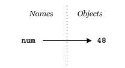
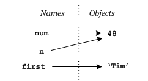
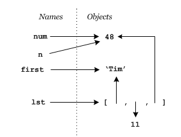
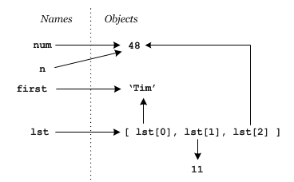
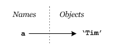
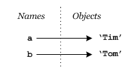
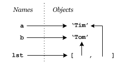
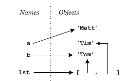
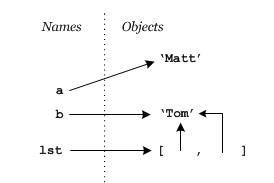

How did you do on the last example on the mutability page? Don't worry if you figured it (or guessed!) wrong. The root cause of confusion about mutability is the underlying semantics of mutable types, and fortunately there is an orderly way of sorting them out using diagrams of memory.
Python uses a reference model for the relation between (or semantics of) variables and values. It's summed up by the phrase,
Assignment creates a reference to an object.
An assignment statement has the form,
name= expression
First, the expression on the right hand side is evaluated, and the result is an object (no surprise since Python is an object oriented language). Then the name on the right hand side is linked to the object. We say that the name refers to (or references) the object.
So a Python assignment statement like,
num = 48is going to make the name num refer to the object
48 (and if it needs to it will create the object on the right
hand side too!). After this statement we can visualize memory looking like
this,

Let's add a couple more statements,
num = 48
n = num
first = 'Tim'We've already seen the first of these statements, and the third one is
similar: the object 'Tim' is created as is the name first and the name first is set to refer to the object 'Tim'. The middle statement is only a little
different because the object the name on the right hand side, n,
will refer to already exists. Note that the result is to have two names
referring to the same object — a common occurrence. The corresponding
diagram of memory is,

The diagram is only a little more complicated for a mutable container type like a list. Suppose we add another line to our code,
num = 48
n = num
first = 'Tim'
lst = [first, 11, num]The resulting memory diagram is,

The key thing to note is that the list is an object that contains object
references, so the single statement lst = [first, 11, num] triggers the
creation of 4 object references in all, the one named lst and three others
which don't have individual names but can be referred to indirectly using
list notation, i.e. lst[0], lst[1] and lst[2]. In fact the diagram could have
been drawn like this to make it explicit,

Let's reconsider the example from mutability and draw the diagrams after each statement has executed.
a = 'Tim' |
 |
b = 'Tom' |
 |
lst = [b, a] |
 |
a = 'Matt' |
 |
lst[1] = lst[0] |
 |
print lst |
From the final diagram it is obvious that the output of the
print statement will be ['Tom', 'Tom'].
The only surprising operation may have been the statement a =
'Matt'. Some students think this will change 'Tim' to
'Matt' so that not only will a refer to
'Matt' but so will lst[1]. But this is clearly not
in keeping with the phrase 'Assignment creates a reference'. In this case,
and precisely following the phrase, Python creates the object
'Matt' and has a refer to it. The reference from
lst[1] to 'Tim' is left untouched.
The other thing to note is that the assignment lst[1] =
lst[0] not only causes lst[1] to refer to
'Tom' like lst[0] does it also triggers the
destruction of the object 'Tim'. It does so because Python uses
reference counting to decide when an object can safely be destroyed
and the memory it is using reclaimed. Reference counting garbage collection
is based on the insight that once the number of references to an object
declines to 0 that object can never be accessed by a program, therefore it is
safe to destroy it. This happens to 'Tim' when the last
reference to it (lst[1]) is removed.
This is also what happens to local variables in functions when the
function ends: as the local names are deleted the reference counts to the
objects drop to 0 and they can be destroyed (unless they are passed back by a return
statement which creates a reference to them from a name in the calling
function).
In terms of our diagrams an object's reference count is the number of
arrow heads pointing to it. At the end of the code fragment above the
reference count of 'Matt' is 1, and the reference count of
'Tom' is 3.
With practice these semantics will become second nature, but at first you may find it necessary to draw diagrams like those above when debugging your code.
* Memory management (the creation and deletion of memory structures, including objects), was the bane of C and C++ programmers' lives. If you did not carefully destroy objects once they were no longer needed you created a memory leak, so called because the amount of memory your program used slowly but steadily increased (since you weren't reclaiming memory), making it seem like your system was slowly leaking available memory. Java was the first widely successful language to make memory management automatic. That meant that programmers could create objects and that the system would automatically determine when it was safe to reclaim them. This reclamation process goes by the colourful name garbage collection. There are numerous ways of determining when given memory can safely be reclaimed; reference counting is just one of them.